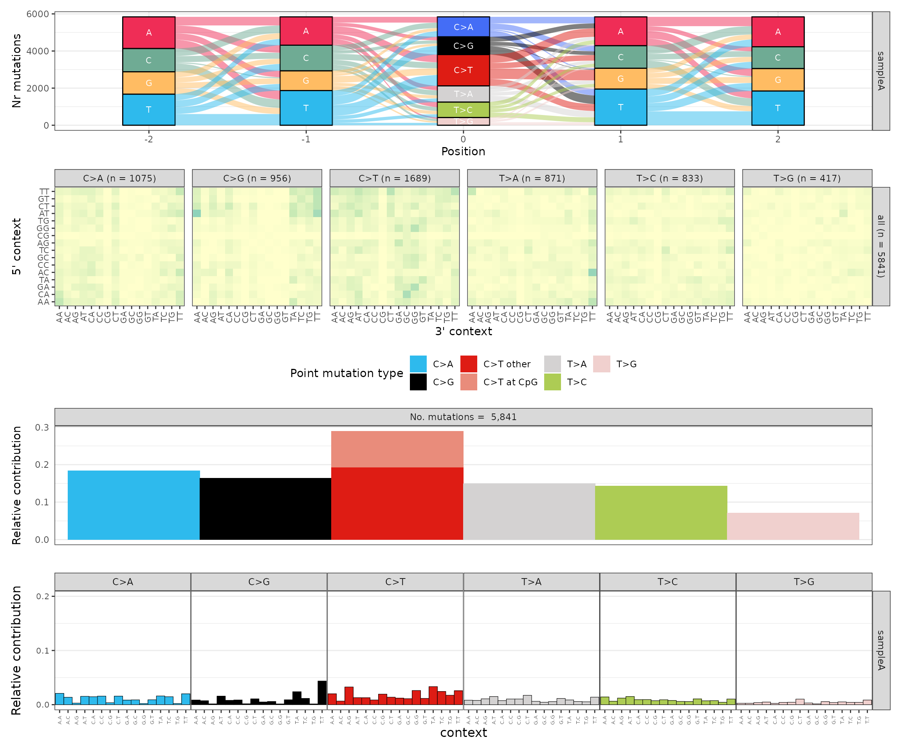
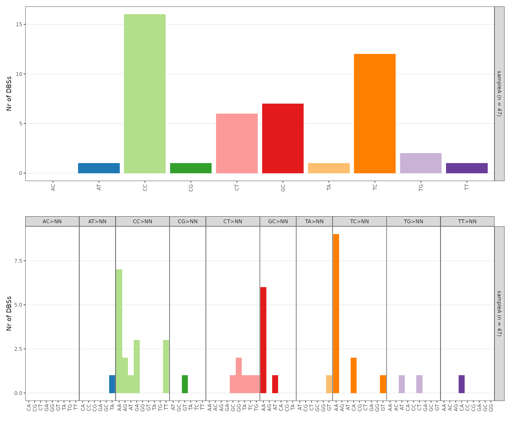
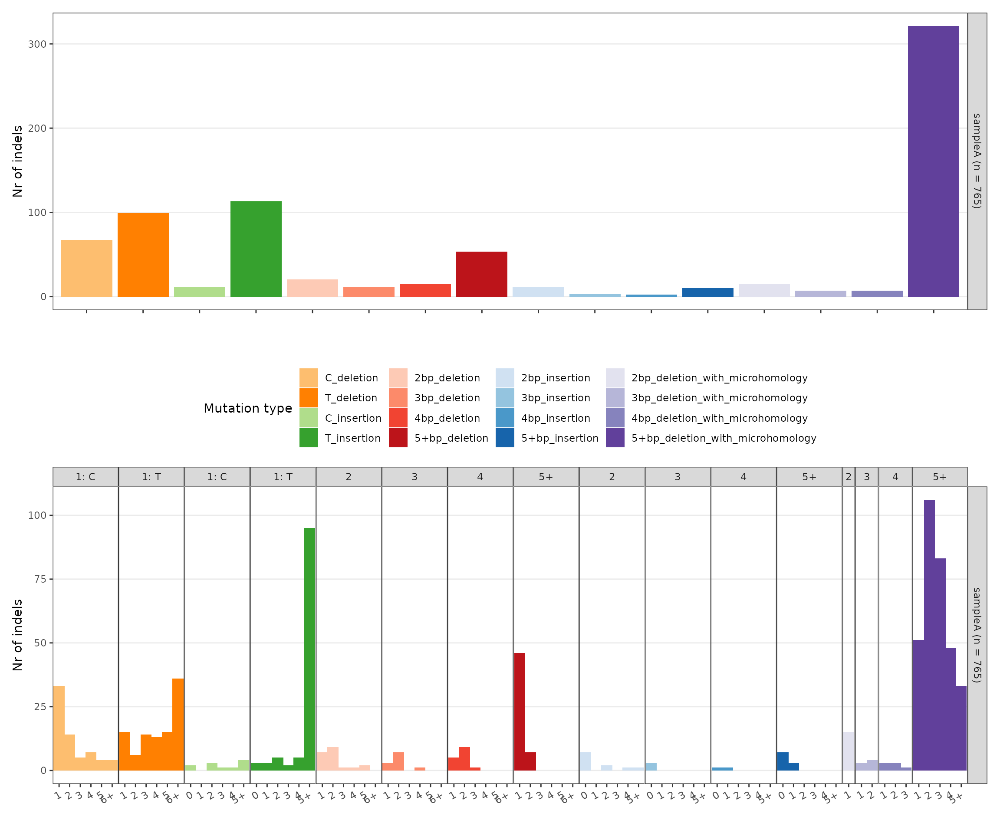
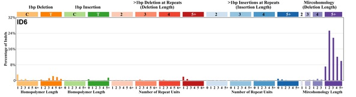
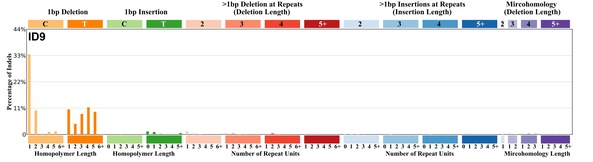

MutationalPatterns
Peter Diakumis
2020-11-20
Source:vignettes/mutationalpatterns.Rmd
mutationalpatterns.Rmd
require(gpgr)
require(MutationalPatterns)
ref_genome <- "BSgenome.Hsapiens.UCSC.hg38"
require(ref_genome, character.only = TRUE)
require(devtools)
require(dplyr)
require(patchwork)Data Preparation
params <- list(
vcf = system.file("extdata/umccrise/snv/somatic-ensemble-PASS.vcf.gz", package = "gpgr"),
nm = "sampleA"
)
gr <- MutationalPatterns::read_vcfs_as_granges(
vcf_files = params$vcf,
sample_names = params$nm,
genome = ref_genome,
group = "auto+sex",
type = "all")
outdir <- "outputs"SNVs (SBS)
Plots
snv_counts <- gpgr::sig_count_snv(vcf_gr = gr, ref_genome = ref_genome)
p_snvs <- gpgr::sig_plot_snv(gr_snv = snv_counts$gr_snv, snv_counts = snv_counts$snv_counts,
ref_genome = ref_genome)
p_snvs$p_river + p_snvs$p_heatmap + p_snvs$p_spectrum + p_snvs$p_96_profile + patchwork::plot_layout(ncol = 1)
Signature Contributions
sigs_snv_2015 <-
gpgr::cosmic_signatures_2015 %>%
gpgr::sig_contribution(mut_mat = snv_counts$snv_counts, signatures = .)
sigs_snv_2020 <-
MutationalPatterns::get_known_signatures(muttype = "snv",
incl_poss_artifacts = TRUE) %>%
gpgr::sig_contribution(mut_mat = snv_counts$snv_counts, signatures = .)
sigs_snv_2015 %>%
gpgr::sig_contribution_table(type = "Sig", outdir = outdir) %>%
knitr::kable(format = "html") %>%
kableExtra::kable_styling(c("hover", "striped"), font_size = 12) %>%
kableExtra::scroll_box(height = "400px")| Rank | Signature | Contribution | RelFreq | Description | Plot |
|---|---|---|---|---|---|
| 1 | Sig3 | 2045 | 0.35 | Breast, ovarian, pancreatic; germline + somatic BRCA1/BRCA2 mut; failure of DNA ds break-repair; many large indels. |

|
| 2 | Sig8 | 1441 | 0.25 | Breast cancer, medulloblastoma; many CC>AA subs; weak strand bias for C>A subs. |

|
| 3 | Sig1 | 749 | 0.13 | All cancers; correlates with age of diagnosis; few small indels |

|
| 4 | Sig13 | 402 | 0.07 | In 22 cancers; mostly cervical, bladder, breast; AID/APOBEC; C>G mut; similar to sig2; maybe viral infection, retrotransposon jumping or tissue inflammation; kataegis. |

|
| 5 | Sig2 | 223 | 0.04 | In 22 cancers; mostly cervical + bladder; AID/APOBEC; similar to sig13; maybe viral infection, retrotransposon jumping or tissue inflammation; exon TSB. |

|
| 6 | Sig6 | 196 | 0.03 | In 17 cancers; mostly colorectal + uterine; associated with defective DNA mismatch repair; found in microsatellite unstable tumors; many small indels. |

|
| 7 | Sig7 | 174 | 0.03 | Skin, lip, head, neck or oral squamous cancers; ultraviolet light exposure; many CC>TT subs; strong TSB with many C>T mut. |

|
| 8 | Sig9 | 161 | 0.03 | Chronic lymphocytic leukaemias, malignant B-cell lymphomas; mut pattern associated with polymerase H (implicated with AID during som hypermutation). |

|
| 9 | Sig26 | 124 | 0.02 | Breast, cervical, stomach cancer, uterine carcinoma; defective DNA mismatch repair. |

|
| 10 | Sig16 | 74 | 0.01 | Liver; strong TSB for T>C at ATN context. |

|
| 11 | Sig22 | 72 | 0.01 | Urothelial (renal pelvis) carcinoma and liver cancers (very high and lower TMB, respectively); exposure to aristolochic acid; strong TSB for T>A. |

|
| 12 | Sig25 | 65 | 0.01 | Hodgkin lymphoma cell lines (not primary); TSB for T>A. |

|
| 13 | Sig15 | 55 | 0.01 | Stomach cancers and a single small cell lung carcinoma; defective DNA mismatch repair; many small indels; |

|
| 14 | Sig17 | 51 | 0.01 | Oesophagus, breast, liver, lung adenocarcinoma, B-cell lymphoma, stomach and melanoma. |

|
| 15 | Sig27 | 3 | 0.00 | Subset of kidney clear cell carcinomas; strong TSB for T>A; many small indels. |

|
sigs_snv_2020 %>%
gpgr::sig_contribution_table(type = "SBS", outdir = outdir) %>%
knitr::kable(format = "html") %>%
kableExtra::kable_styling(c("hover", "striped"), font_size = 12) %>%
kableExtra::scroll_box(height = "400px")


DBS
Plots
dbs_counts <- gpgr::sig_count_dbs(vcf_gr = gr)
p_dbs <- gpgr::sig_plot_dbs(dbs_counts = dbs_counts)
p_dbs$p_dbs_main / p_dbs$p_dbs_cont
Signature Contributions
sigs_dbs <-
MutationalPatterns::get_known_signatures(muttype = "dbs") %>%
gpgr::sig_contribution(mut_mat = dbs_counts, signatures = .)
sigs_dbs %>%
gpgr::sig_contribution_table(type = "DBS", outdir = outdir) %>%
knitr::kable(format = "html") %>%
kableExtra::kable_styling(c("hover", "striped"), font_size = 12) %>%
kableExtra::scroll_box(height = "400px")| Rank | Signature | Contribution | RelFreq | Description | Plot |
|---|---|---|---|---|---|
| 1 | DBS4 | 21 | 0.50 | https://cancer.sanger.ac.uk/cosmic/signatures/DBS/DBS4.tt |

|
| 2 | DBS2 | 10 | 0.24 | https://cancer.sanger.ac.uk/cosmic/signatures/DBS/DBS2.tt |

|
| 3 | DBS6 | 5 | 0.12 | https://cancer.sanger.ac.uk/cosmic/signatures/DBS/DBS6.tt |

|
| 4 | DBS1 | 3 | 0.07 | https://cancer.sanger.ac.uk/cosmic/signatures/DBS/DBS1.tt |

|
| 5 | DBS7 | 2 | 0.05 | https://cancer.sanger.ac.uk/cosmic/signatures/DBS/DBS7.tt |

|
| 6 | DBS9 | 1 | 0.02 | https://cancer.sanger.ac.uk/cosmic/signatures/DBS/DBS9.tt |

|
| 7 | DBS10 | 0 | 0.00 | https://cancer.sanger.ac.uk/cosmic/signatures/DBS/DBS10.tt |

|
| 7 | DBS11 | 0 | 0.00 | https://cancer.sanger.ac.uk/cosmic/signatures/DBS/DBS11.tt |

|
INDELs
Plots
indel_counts <- gpgr::sig_count_indel(vcf_gr = gr, ref_genome = ref_genome)
p_indels <- gpgr::sig_plot_indel(indel_counts = indel_counts)
p_indels$p_indel_main / p_indels$p_indel_cont
Signature Contributions
sigs_indel <-
MutationalPatterns::get_known_signatures(muttype = "indel") %>%
gpgr::sig_contribution(mut_mat = indel_counts, signatures = .)
sigs_indel %>%
gpgr::sig_contribution_table(type = "ID", outdir = outdir) %>%
knitr::kable(format = "html") %>%
kableExtra::kable_styling(c("hover", "striped"), font_size = 12) %>%
kableExtra::scroll_box(height = "400px")| Rank | Signature | Contribution | RelFreq | Description | Plot |
|---|---|---|---|---|---|
| 1 | ID6 | 352 | 0.46 | https://cancer.sanger.ac.uk/cosmic/signatures/ID/ID6.tt |  |
| 2 | ID8 | 122 | 0.16 | https://cancer.sanger.ac.uk/cosmic/signatures/ID/ID8.tt |

|
| 3 | ID1 | 97 | 0.13 | https://cancer.sanger.ac.uk/cosmic/signatures/ID/ID1.tt |

|
| 4 | ID4 | 42 | 0.06 | https://cancer.sanger.ac.uk/cosmic/signatures/ID/ID4.tt |

|
| 5 | ID9 | 40 | 0.05 | https://cancer.sanger.ac.uk/cosmic/signatures/ID/ID9.tt |  |
| 6 | ID2 | 38 | 0.05 | https://cancer.sanger.ac.uk/cosmic/signatures/ID/ID2.tt |

|
| 7 | ID5 | 28 | 0.04 | https://cancer.sanger.ac.uk/cosmic/signatures/ID/ID5.tt |

|
| 8 | ID3 | 17 | 0.02 | https://cancer.sanger.ac.uk/cosmic/signatures/ID/ID3.tt |

|
| 9 | ID7 | 7 | 0.01 | https://cancer.sanger.ac.uk/cosmic/signatures/ID/ID7.tt |

|
| 9 | ID16 | 7 | 0.01 | https://cancer.sanger.ac.uk/cosmic/signatures/ID/ID16.tt |

|
| 11 | ID17 | 6 | 0.01 | https://cancer.sanger.ac.uk/cosmic/signatures/ID/ID17.tt |

|
| 12 | ID14 | 1 | 0.00 | https://cancer.sanger.ac.uk/cosmic/signatures/ID/ID14.tt |

|
Session Info
| var | value |
|---|---|
| version | R version 4.0.3 (2020-10-10) |
| os | Ubuntu 18.04.5 LTS |
| system | x86_64, linux-gnu |
| ui | X11 |
| language | (EN) |
| collate | C.UTF-8 |
| ctype | C.UTF-8 |
| tz | Etc/UTC |
| date | 2020-11-20 |
| package | version | datestamp |
|---|---|---|
| base | 4.0.3 | 2020-10-18 |
| gpgr | 0.1.0 | 2020-11-20 |
| MutationalPatterns | 3.0.0 | 2020-10-27 |